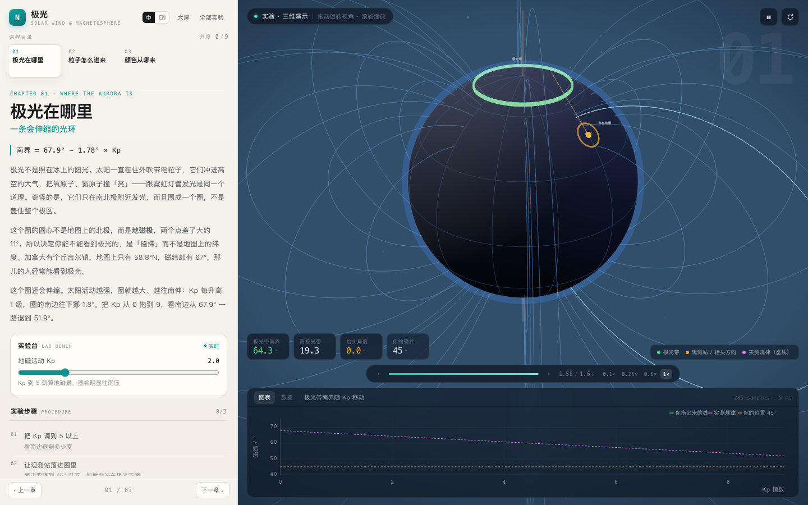
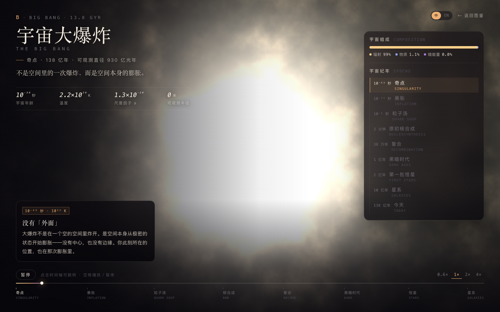
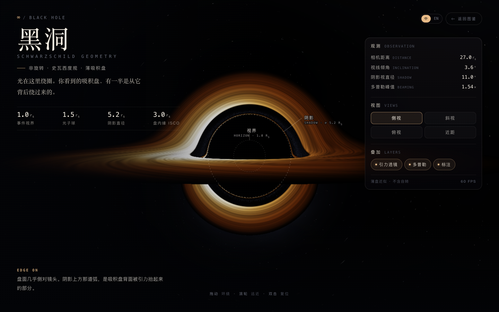
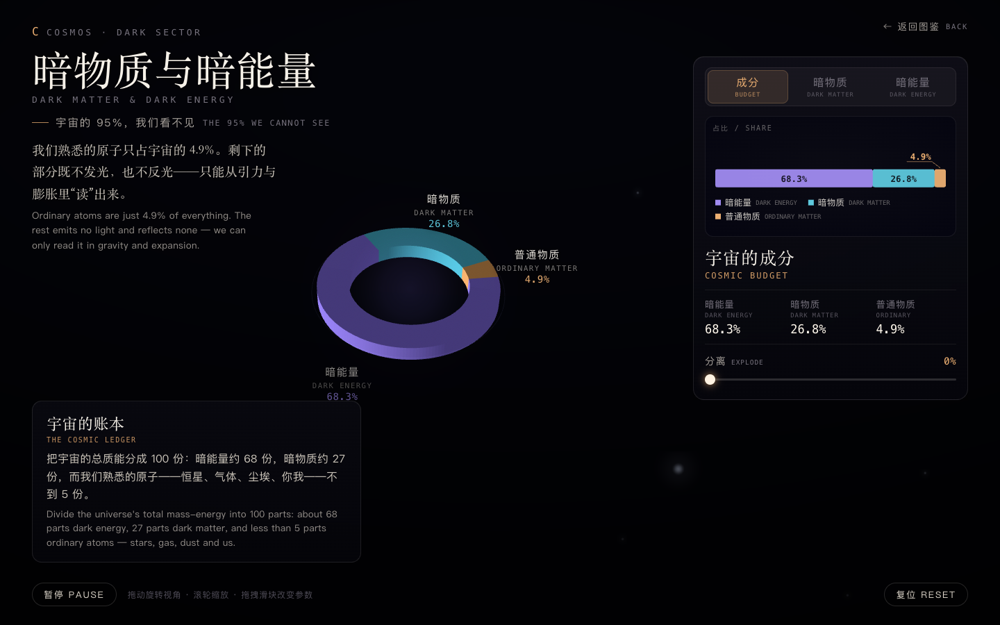
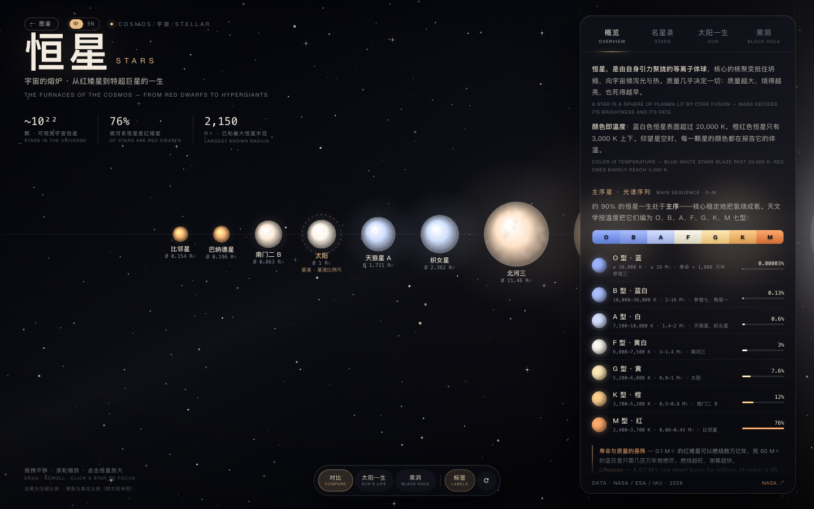
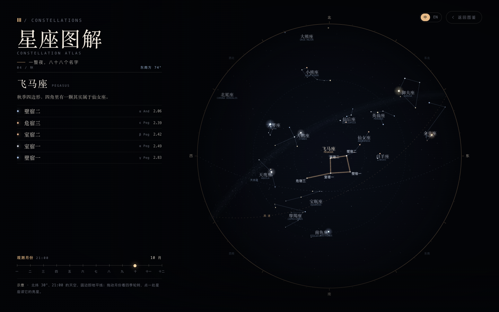
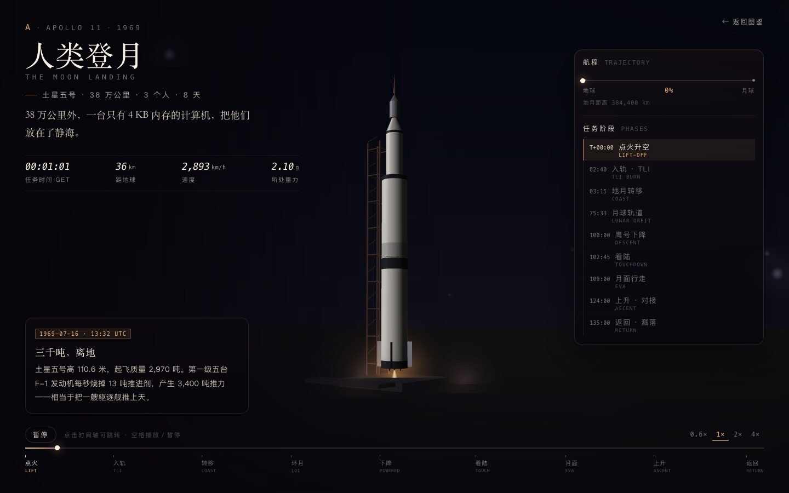
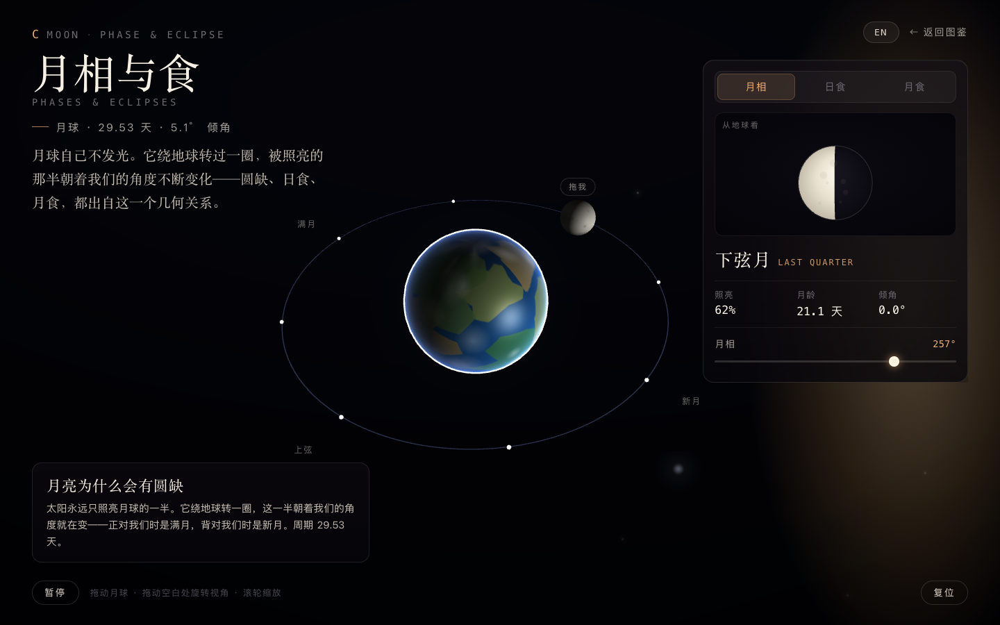

FIELD / Astronomy
天文学
Astronomy从太阳系探索行星、太阳风与空间天气，再走向恒星和宇宙。
AVAILABLE LESSONS / 12
选择一个演示，开始探索
点击卡片即可直接打开演示。
 LESSON / 01
LESSON / 01太阳系行星图鉴
Solar System Atlas旋转、靠近并观察太阳与行星。
3D 漫游 · 天体资料直接进入演示 LESSON / 02
LESSON / 02太阳系结构
Structure of the Solar System从行星轨道走向柯伊伯带与奥尔特云。
尺度图解 · 光行时直接进入演示 LESSON / 03
LESSON / 03落入天王星
Falling into Uranus沿着探测器的下降路径，观察天王星的大气层。
交互模拟 · 大气分层直接进入演示 LESSON / 04
LESSON / 04地球到火星
Earth to Mars观察一次简化的地火转移任务。
轨道转移 · 任务时间直接进入演示
LESSON / 05极光实验室
Aurora Lab观察极光带的位置、带电粒子在地磁场中的运动，以及不同能量粒子如何激发高层大气发光。模型对地磁场和电子运动作了教学简化。
3D 地磁场 · 粒子运动 · 极光发光层直接进入演示
LESSON / 06宇宙大爆炸
The Big Bang沿时间线了解早期宇宙的膨胀历史，并认识宇宙大爆炸模型。
交互时间线 · 宇宙学模型直接进入演示
LESSON / 07黑洞
Black Holes观察黑洞附近光与空间的教学示意。
3D 演示 · 引力直接进入演示
LESSON / 08暗物质与暗能量
Dark Matter & Dark Energy通过交互场景探索宇宙的质能组成、暗物质的引力效应与暗能量。
WebGL2 · 宇宙组成 · 参数探索直接进入演示
LESSON / 09恒星图鉴
Star Atlas比较恒星大小、光谱类型与生命周期阶段。
图鉴 · 赫罗图直接进入演示
LESSON / 10星座图解
Constellation Atlas在星空图上辨认星座，并了解视角与距离。
星空图解 · 交互观察直接进入演示
LESSON / 11人类登月
Moon Landing通过交互场景了解登月任务与月面环境。
3D 场景 · 任务过程直接进入演示
LESSON / 12月相与食
Moon Phases & Eclipses切换月相、日食与月食，观察太阳、地球和月球的几何关系。
WebGL2 · 月相 · 日食与月食直接进入演示